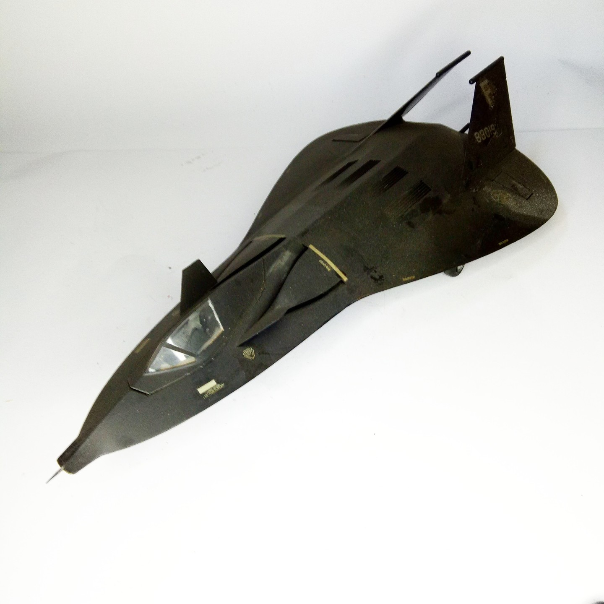

Aerei · scale model archive
Lockheed F117 (fake)
Lockheed F117 (fake) — Kit: Italeri, Scale: 1/48. The very first model of a stealth aircraft, compltely fictitious, apparently the leaks were purposely…

Photo gallery
English description
The very first model of a stealth aircraft, compltely fictitious, apparently the leaks were purposely misleading about stealth shapes
#1/48 #Revell
Descrizione italiana
Il primissimo modello di una stealth aereo, compltely immaginario, apparently il leaks erano purposely misleading about stealth shapes.